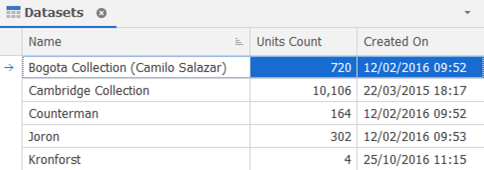
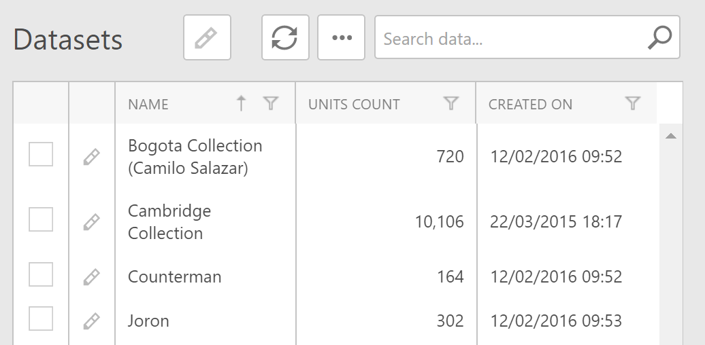
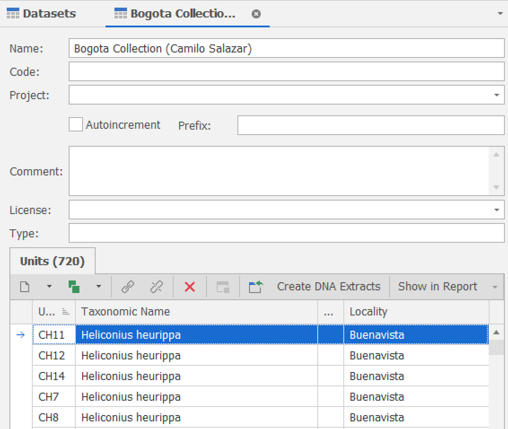
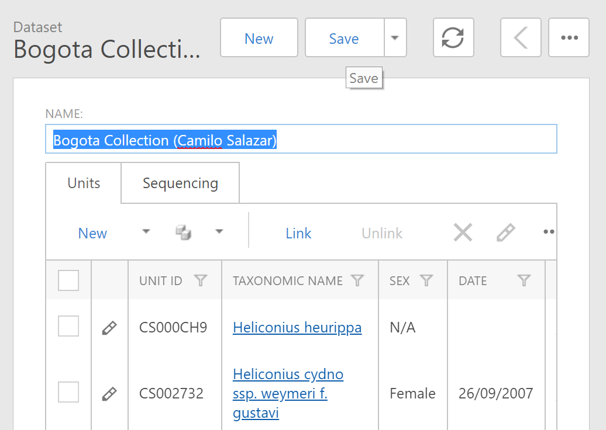

Views
The Views are responsible for data representation and editing. Views have access to a specified data table and allow end-users to browse and edit data. There are 3 types of views:
- List View
- Detail View
- Dashboard View
List View
A List View displays a collection of objects (table) of the same class.
List Views use List Editors (see ListEditor) to show data. Default editors are in most cases grid (tables). Examples of other list editors include map, pivot, chart and others.
Windows Client:

Web Client:

Detail View
Detail View typically represents a data representation or entry form for a particular object (data record).
Windows Client:

Web Client:

Dashboard View
Dashboard Views are not bound to data directly and display several Views side-by-side in a single Frame. These embedded Views reside within DashboardViewItem objects.
Dashboard Views can also display custom or built-in View Items (for example, StaticText or StaticImage).